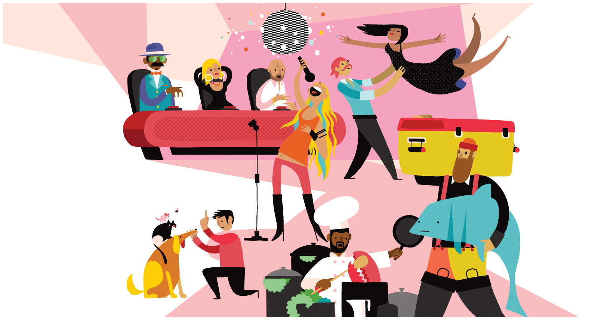
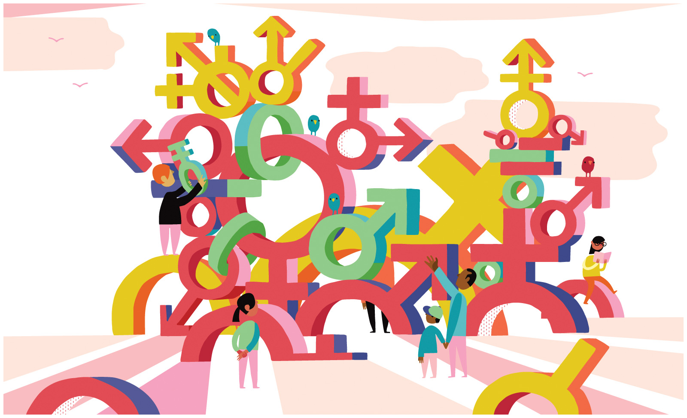
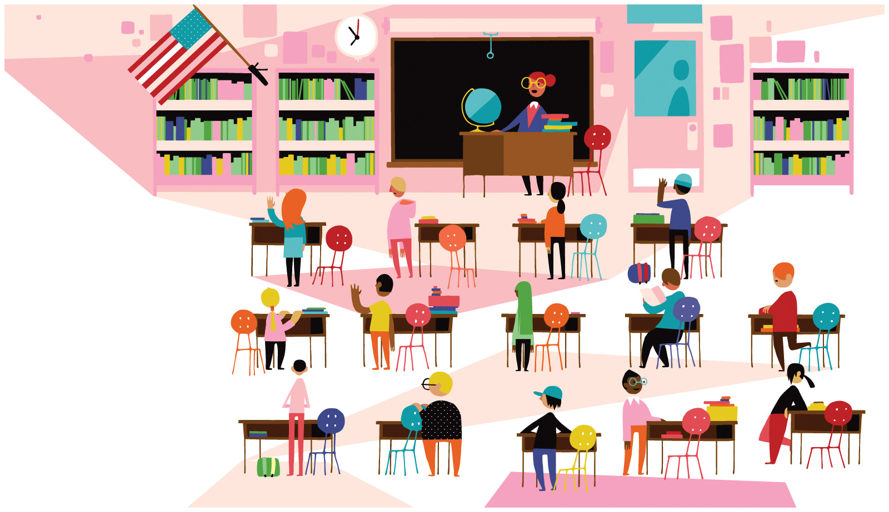
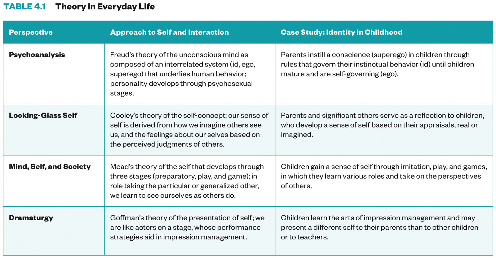

Sociology 101¶

This website provides all the course materials for the University of North Carolina at Chapel Hill’s Sociological Perspectives (SOCI101.001) taught by Professor Neal Caren.
For Fall 2020, the course is entirely online. This website is an interactive guide to the course, including the syllabus, lesson plans for each week and assignments.
Overview¶
The course is designed to introduce students to the sociological study of society. Sociology focuses on the systematic understanding of social interaction, social organization, social institutions, and social change. Major themes in sociological thinking include:
the interplay between the individual and society;
how society is both stable and changing;
the causes and consequences of social inequality;
and the social construction of human life. Understanding sociology helps discover and explain social patterns and see how such patterns change over time and in different settings. By making vivid the social basis of everyday life, sociology also develops critical thinking by revealing the social structures and processes that shape diverse forms of human life.
Over the semester, you will develop and apply your sociological imagination to think systematically about how things we experience as personal problems are social issues. In your textbook readings, you will be introduced to the significant topics that sociologists study and how the topics are analyzed. During class time and through our assignments, you will have a chance to further develop your sociological imagination and apply it to new situations. In exams and exercises, you will have the opportunity to demonstrate your mastery of sociological thinking.
This course has no prerequisites and is appropriate for just about everyone. The course is an introduction to the field of sociology for students who plan further study, and an overview for students will only visit the world of sociology once. The course will also provide students an opportunity for students to learn information relevant to the sociology section of the MCAT.
Course Objectives¶
Upon the successful completion of this course students will be able to:
Demonstrate understanding of fundamental sociological theories and concepts;
Explain, evaluate and apply the process of sociological research;
Discover and develop a sociological imagination and apply it to societal issues;
Understand the ways in which social institutions are interdependent; and
Explore how social factors contribute to social inequalities and efforts to create social change.
Schedule¶
The plan for the semester is the Lesson schedule. Different assignments are due at different times during the week, as described in the Weekly deadlines.
Lesson schedule¶
Week |
Theme |
RW Chapter |
Thursday Film |
Assignments |
|---|---|---|---|---|
8/10 |
Sociological Perspectives |
1 |
Soul Food Junkies |
Inquizitive; Breaching application, Film response |
8/17 |
Culture |
3 |
American to Me, Episode 1 |
Inquizitive; Families on TV application, Film response |
8/24 |
Socialization |
4 |
American to Me, Episode 2 |
Inquizitive; Obesity case study, Film response |
8/31 |
Groups |
5 |
American to Me, Episode 3 |
Inquizitive; Who am I application, Film response |
9/7 |
Exam |
Divorce case study; Exam 1 |
||
9/14 |
Deviance |
6 |
American to Me, Episode 4 |
Inquizitive; Imprisonment case study, Film response |
9/21 |
Social Class |
7 |
American to Me, Episode 5 |
Inquizitive; SNAP application, Film response |
9/28 |
Race and Ethnicity |
8 |
American to Me, Episode 6 |
Inquizitive; Map application, Film response |
10/5 |
Gender and Sexuality |
9 |
American to Me, Episode 7 |
Inquizitive; Bechdel application, Film response |
10/12 |
Exam |
Cohabit case study; Exam 1 |
||
10/19 |
Research Methods |
2 |
American to Me, Episode 8 |
Inquizitive; Study Design application, Film response |
10/26 |
Politics, Education and Religion |
10 |
American to Me, Episode 9 |
Inquizitive; Education application, Film response |
11/2 |
Family |
12 |
American to Me, Episode 10 |
Inquizitive; Marriage case study, Film response |
11/9 |
Health |
14 |
American to Me, Episode 10 |
Inquizitive; Health case study, Film response |
11/16 |
Exam Review |
Final Exam |
Weekly deadlines¶
Assignment |
Due |
|---|---|
Inquizitive |
Tuesdays, midnight |
Film Discussion |
Thursday, during class |
Exams |
Thursday, during class |
Application |
Sunday, midnight |
Case Study |
Sunday, midnight |
Film Responses |
Sunday, midnight |
Assignment Types¶
There are several different types of assignments in the course: Applications, Case Studies, InQuizitive, Film Responses and Exams.
Applications¶
(20% of course grade)
You will have eight opportunities to complete short research and writing assignments that employ concepts from the course to the outside world. You might shop at supermarket, watch a television show, or analyze housing data. For each Application, you will theories and concept from the course to develop expectations about what you’ll find. After collecting the data, you will write up your study in a short research report. You will have eight opportunities to complete these, and your highest five grades will count.
Case Studies¶
(15% of course grade)
Understanding how social science research is used to test theories is a unique skill you will develop in the course. Six times during the semester you will be asked to read a passage and answer a series of questions about how the study was conducted, what was found, and how it is linked to the larger body of sociological literature. These are conducted out of class on Sakai Your top five grades count.
InQuizitive¶
(15% of course grade)
Each non-exam week you are assigned a chapter from the textbook. To help you focus your reading on the central concepts and provide a quick check on your capacity to identify and use the new concepts, you are required to complete a weekly InQuizitive reading test. These quizzes are untimed and you can keep answering questions until you earn a perfect score.
If you have never used InQuizitive before, I highly recommend that you complete the How To Use InQuizitive assignment at the beginning of the semester.
Film Responses¶
(15% of course grade)
Exams¶
(45% of course grade)
The course has three exams: two during the semester and a final. Exams are multiple-choice and administered through Sakai. Exams during the semester are taken Thursday during class time. Those with registered accommodations will be provided additional times. The final exam will be cumulative.
Assignment Opportunities¶
For Applications, Case Studies, InQuizitive, and Film Responses, you can drop some of your lowest grades. For example, there are eight Applications available, but only your five highest grades count. Historically, students who are happy with their grade in an assignment area tend to skip some near the end of the semester. Unlike the other assignments, no Exams scores are dropped.
Assignment |
Opportunities |
Graded |
% of Course Grade |
|---|---|---|---|
Applications |
8 |
5 |
20 |
Case Studies |
6 |
5 |
15 |
InQuizitive |
12 |
10 |
15 |
Film Responses |
12 |
10 |
15 |
Exam 1 |
1 |
1 |
10 |
Exam 2 |
1 |
1 |
10 |
Exam 3 |
1 |
1 |
15 |
100 |
Technology¶
Details to come on Lesson Book, Films, Inquizitive and Sakai.
Code of Conduct¶
We hope to create an environment where diverse individuals can learn and interact in a positive and affirming way. The Sociology Department is dedicated to providing a harassment-free experience for everyone.
Be friendly and patient.
Be welcoming. We strive to be a community that welcomes and supports people of all backgrounds and identities. This includes, but is not limited to members of any race, ethnicity, culture, national origin, color, immigration status, social and economic class, educational level, sex, sexual orientation, gender identity and expression, age, size, family status, political belief, religion, and mental and physical ability.
Be respectful. Not all of us will agree all the time, but disagreement is no excuse for poor behavior and poor manners. We might all experience some frustration now and then, but we cannot allow that frustration to turn into a personal attack. It’s important to remember that a community where people feel uncomfortable or threatened is not a productive learning environment. **Be careful in the words that you choose. ** Be kind to others. Do not insult or put down other participants. Harassment and other exclusionary behavior aren’t acceptable. Harmful behaviors include, but is not limited to:
Violent threats or language directed against another person.
Discriminatory jokes and language.
Posting sexually explicit or violent material.
Posting (or threatening to post) other people’s personally identifying information (“doxing”).
Personal insults, especially those using racist or sexist terms.
Unwelcome sexual attention.
Advocating for, or encouraging, any of the above behavior.
Repeated harassment of others. In general, if someone asks you to stop, then stop.
Respect the privacy of others. In a classroom setting, we expect that the person sitting next to us isn’t secretly videotaping us. The presumption that our words will not be shared beyond the classroom setting is essential to creating an open atmosphere for discussion and learning. We seek to create this same environment online. Do not record or publicly distribute the comments of other students.
When we disagree, try to understand why. Disagreements, both social and political, happen all the time, and this course will be no exception. We must engage with differing views constructively. Remember that we’re different. The strength of discussions comes from our diverse community, people from a wide range of backgrounds. Different people have different perspectives on issues. Being unable to understand why someone holds a viewpoint doesn’t mean that they’re wrong. Don’t forget that it is human to err, and blaming each other doesn’t get us anywhere. Instead, focus on helping to resolve issues and learning from mistakes.
This code of conduct applies to all of this course’s spaces, including public channels, private channels, emails, and direct messages, both online and off. anyone who violates this code of conduct may be sanctioned or referred to the Honor Court as violations may “impair the right of all members of the University community to learn and thrive in a safe and respectful environment”
Please let me know if something said or done in the classroom, by either myself or other students, is particularly troubling or causes discomfort or offense. While our intention may not be to cause discomfort or offense, the impact of what happens throughout the course is not to be ignored and is something that I consider to be very important and deserving of attention. I am always open to listening to students’ experiences, and want to work with students to find acceptable ways to process and address the issue. You an reach me over email or text (919-381-7638). If for any reason you do not feel comfortable discussing the issue directly with me, I encourage you to seek out another, more comfortable avenue to address the issue.
Frequently Asked Questions¶
What’s the attendance policy?¶
I expected everyone to participate during our virtual meetings actively. Watching the films together is a central component of this course. If you are unable to attend, you may write a more extended film response and submit your film notes for that week’s Film Response assignment on Sakai. Except for the exams, I drop one or more of the lowest grades for each assignment type. Details to come.
How do I prepare for an exam?¶
The exams are multiple-choice and administered on Sakai. There are three major types of questions. The first set of questions are similar to those on InQuizitive, so practice there. The lesson key words cover what I think are the core concepts in each chapter, so these are particularly important to know. The second type of question is similar to Case Studies, so be sure to practice and review your approach. There is a Case Study do each exam week, so be sure to complete it before the exam, so you have that additional opportunity to practice. Finally, there will be questions that ask you to make connections between the films and course concepts. They don’t require detailed knowledge of each scene, but be sure to be familiar with the major themes of each film shown.
I can’t make the exam. What can do?¶
Details to come.
Why does this class have a Code of Conduct?¶
I intend that students from all diverse backgrounds and perspectives be well served by this course, that students’ learning needs be addressed both in and out of class, and that the diversity that students bring to this class be viewed as a resource, strength, and benefit. I intend to present materials and activities that are respectful of diversity: gender, sexuality, disability, age, socioeconomic status, ethnicity, race, and culture. The topics that we’re covering in this class are often difficult, not just intellectually but emotionally. While I expect there to be rigorous discussion and even disagreement in the course of our class discussions, I ask that you engage in dialogue with care and empathy for the other members in the classroom. Aim to disagree without becoming disagreeable. In this course, we will not shy away from the uncomfortable. Critically examining and assessing assumptions and values is not just one of sociology’s tasks but is an activity vital to engaged citizenship. I will work to ensure a classroom environment that supports your taking these intellectual and emotional risks. The Code of Conduct helps ensure that everyone is aware of the types of interactions that foster positive interactions and those that may not.
Can I hand in work late?¶
No, but for each non-exam assignment, you can drop your lowest grade(s). Skipped assignments receive a zero, but as long as you do at least the minimum number of required assignments of that type, the zero won’t impact your final grade. If you have a medical condition or other situation that impacts your ability to do academic work, such as a concussion or hospitalization, please email the instructor to make alternate arrangements.
Where can I get extra help with sociological concepts?¶
Learning online can be tougher than in a traditional classroom. Details to come.
What other campus resources can help me?¶
The Writing Center is available to assist with papers. If you experience an emergency this semester, please contact the Dean of Students Office. They will notify all of your instructors so that you will not have to. You have paid for all of these excellent resources. Please use them!
Do academic integrity policies still apply to an online course?¶
Yes. The University of North Carolina at Chapel Hill has had a student-led honor system for over 100 years. Academic integrity is at the heart of Carolina, and we all are responsible for upholding the ideals of honor and integrity. The student-led Honor System is responsible for adjudicating any suspected violations of the Honor Code, and all suspected instances of academic dishonesty will be reported to the honor system. Information, including your responsibilities as a student, is outlined in the Instrument of Student Judicial Governance. Your full participation and observance of the Honor Code is expected. All academic work in this course, including homework, quizzes, and exams, is to be your own work, unless otherwise expressly provided. It is your responsibility if you have any doubt to confirm whether or not collaboration is permitted.
How can I get accommodations?¶
The University of North Carolina at Chapel Hill facilitates the implementation of reasonable accommodations, including resources and services, for students with disabilities, chronic medical conditions, temporary disability, or pregnancy complications resulting in difficulties with accessing learning opportunities. All accommodations are coordinated through the Accessibility Resources and Service Office. If you are registered with ARS, be sure to confirm with me or the TA that we have received your accommodation request.
How is the final grade determined?¶
Assignment |
Opportunities |
Graded |
% of Course Grade |
|---|---|---|---|
Applications |
8 |
5 |
20 |
Case Studies |
6 |
5 |
15 |
InQuizitive |
12 |
10 |
15 |
Film Responses |
12 |
10 |
15 |
Exam 1 |
1 |
1 |
10 |
Exam 2 |
1 |
1 |
10 |
Exam 3 |
1 |
1 |
15 |
100 |
Do you round up?¶
No.
First Week Checklist¶
By the end first week of class, be sure to:
Purchase access to the textbook.
Link to InQuizitive
Staff¶
Name |
Role |
Salutation |
Pronouns |
|---|---|---|---|
Neal Caren |
Instructor |
Professor Caren |
he/him |
Katherine Tait |
Grader |
Katie |
she/re |
Professor Neal Caren¶

I am an Associate Professor in the Sociology at the University of North Carolina, Chapel Hill. I earned my BA in Sociology from Columbia University and my PhD from New York University. My current research is on contemporary US social movements and the uses of media data for understanding movement processes. I also serve as the editor of the interdisciplinary social movements journal Mobilization. Check out our most recent issue. In addition to teaching Sociological Persepctive, I also teach a capstone course for our Social and Economic Justice minor. At the graduate level, I teach course computational social science, with a focus on collecting and analyzing text data with Python. I enjoy trail running in Carolina North and trail racing in the mountains. Pronouns: he/him.
Katherine Tait¶

Katherine Tait is a PhD candidate in the UNC-Chapel Hill Department of Sociology. She earned her BA in Sociology & Anthropology from Carleton College and her MA in Economics from the New School for Social Research. Her research is on the interrelationship between social movement and economic conditions, and currently focuses on democratic workplaces, specifically worker-owned cooperatives (businesses in which all workers are also co-owners, and have equal input on decisions affecting day-to-day operations and the future direction of their workplace). While at UNC, Katherine has taught courses in Economic Sociology and Introduction to Sociology, has worked on the social science journals Mobilization and Social Forces, and in 2017 founded the UNC-Chapel Hill chapter of SPLC on Campus, an organization for graduate and undergraduate student activism for equal justice and opportunity. Her non-work hobbies include yoga, going to music and dance performances, taking care of her newborn son Vinnie, and, of course, streaming various TV shows in this “Golden Age of Television!” Pronouns: she/her.
Details to come on TAs.

Sociological Perspectives¶
You are embarking on a fascinating journey as you learn to see, think, and analyze yourself and the world around you from a sociological perspective. This lesson invites you to see, think, and analyze from a sociological perspective. It provides a brief overview of the historical and intellectual development of sociology, along with describing how sociology is similar to and different from other social sciences. The lesson ends with a discussion of new theoretical approaches within the discipline. The tools presented here will help you build a foundation for new knowledge and insights into social life.
Learning Objectives¶
By the end of this lesson, you will be able to:
Define key terms related to the discipline of sociology.
Compare the major sociological theories.
Test theories of social norms.

Discuss (Thursday during class):¶
Sould Food Junkies¶

a culinary journey to understand a quintessential American cuisine: Soul Food. Filmmaker Byron Hurt examines the rich history and social significance of foods tied closely to black cultural identity as well as their health implications on the modern American diet. Join Hurt as he investigates the ups and downs of Soul Food and a growing food justice movement to make healthier foods more affordable and accessible. PBS
We start applying our sociological tools to film with Sould Food Junkies. We will watch it together starting Thursday at 9:50am.
Be sure to have the movie ready to roll at the start of class.
Login to the course Slack at 9:45am and say hi to your group!
Before Thursday:
What are some of your memories, feelings, or other associations with food?
Why are eating habits so hard to break? Do you think it’s possible to be addicted to a specific food or to food in general?
Is eating just a matter of personal behavior and preference? When do eating habits—or the effects of eating habits and food choices—step over into the public realm?
Assignments¶
Be sure to hand these in before the deadline
Inquizitive Chapter Set 1 (Tuesday at 9:45am)
Breaching application (Sunday at 11:59pm)
Soul Food Junkies reflection (Sunday at 11:59pm)
Questions¶
Questions about assignments or the lesson?
Post it in the Slack #ask-a-prof channel!
Ask your peers in the Slack #ask-anyone chanel!
Signup for virtual office hours!
Email me or your TA.
Lesson Keywords¶
Sociology
Society
Social Sciences
Sociological Perspective
Culture Shock
Sociological Imagination
Microsociology
Macrosociology
Theories
Paradigm
Positivism
Social Darwinism
Structural Functionalism
Solidarity
Mechanical Solidarity
Organic Solidarity
Anomie
Sacred
Profane
Empirical
Structural
Manifest Functions
Latent Functions
Conflict Theory
Social inequality
Alienation
Critical theory
Critical race theory
Feminist theory
Queer theory
Bureaucracies
Iron Cage
Verstehen
Symbolic Interactionism
Pragmatism
Postmodernism
Modernism
The least you need to know¶


Culture¶
This lesson introduces how sociologists think about culture. Culture is one of the fundamental elements of social life and, thus, an essential topic in sociology. Many of the concepts presented here will come up again in almost every subsequent lesson. Because culture is learned so slowly and incrementally, we are often unaware of how it becomes ingrained in our ways of thinking. Applying the sociological perspective to culture requires us to recognize the strangeness in our own culture. This lesson outlines the basics of studying culture and allows you to test potential relationships between television depictions of families and marriage rates. Although culture is familiar to us, you should be seeing it in a new and different way by the time you finish this lesson.
Learning Objectives¶
By the end of this lesson, you will be able to:
Describe how sociologists define the components of culture.
Identify variation in culture and cultural change.
Analyze the relationship between culture and family.
Discuss (Thursday during class):¶
Context Matters: The Permanence of Racism¶

This week we watch first episode of American to Me. This is the first episode of a ten part series looking at race and class in an American high school. We will watch it together starting Thursday at 9:50am.
Be sure to have the movie ready to roll at the start of class.
Login to the course Slack at 9:45am and say hi to your group!
Before Thursday:
Think about the social life in your high school: did people of similar races stick together or do they mix? If they stick together, when?
Is it important for some people who share the same racial identity to spend time together, apart from the larger collective?
What’s your racial context in college and how does it inform how you navigate the spaces you occupy?
Assignments¶
Be sure to hand these in before the deadline
Inquizitive Chapter Set 3 (Tuesday at 9:45am)
Families on Television application (Sunday at 11:59pm)
America to Me reflection (Sunday at 11:59pm)
Questions¶
Questions about assignments or the sociology of culture?
Post it in the Slack #ask-a-prof channel!
Ask your peers in the Slack #ask-anyone chanel!
Signup for virtual office hours!
Email me or your TA.
Lesson Keywords¶
ethnocentrism
cultural relativism
material culture
symbolic culture
Sapir-Whorf hypothesis
values
norms
laws
folkways
signs
gestures
language
mores
taboo
sanction
social control
Dominant culture
subculture
counterculture
ideal culture
real culture
cultural diffusion
cultural imperialism
sanction


Groups¶
This lesson explores some of the different ways we organize our lives in groups. Here you will gain some of the analytic tools you can use to understand the specific groups we’ll be investigating later in the semester. Concepts such as peer pressure, teamwork, bureaucratization, and anomie can be fruitfully applied to analyses of families, work and volunteer organizations, political groups, and religious communities. Consider this lesson an introduction to group dynamics in general—a springboard from which to begin our sociological analysis of particular types of groups. During the week, think about the groups you belong to and how they affect your values and behavior.
Learning Objectives¶
By the end of this lesson, you will be able to:
Describe how sociologists define groups, organizations and networks.
Distinguish between theoretical perspectives on groups.
Analyze how personal identity is related to groups.
Discuss (Thursday during class):¶
Racialized Relationships in Families and Communities¶

We will continue with the third episode of American to Me. We will watch it together starting Thursday at 9:50am.
Be sure to have the movie ready to roll at the start of class.
Login to the course Slack at 9:45am and say hi to your group!
Before Thursday:
How does your family experience shape how you show up in conversations about race?
Who are you comfortable having a discussion about race with and why? Who are you not comfortable speaking with about race and why?
What messages did you receive about race from your family, and how do those messages conflict or align with the messages you receive(d) in school?
Assignments¶
Be sure to hand these in before the deadline
Inquizitive Chapter Set 5 (Tuesday at 9:45am)
Who am I Application (Sunday at 11:59pm)
America to Me Episode 3 reflection (Sunday at 11:59pm)
Questions¶
Questions about assignments or the lesson?
Post it in the Slack #ask-a-prof channel!
Ask your peers in the Slack #ask-anyone chanel!
Signup for virtual office hours!
Email me or your TA.
Lesson Keywords¶
group
crowd
aggregates
category
primary groups
secondary groups
social network
social ties
strong ties
weak ties
anomie
group dynamics
in-group
out-group
reference group
groupthink
social influence
asch experiment
social identity theory
power
coercive power
authority
traditional authority
legal-rational authority
charismatic authority
instrumental leadership
expressive leadership
bureaucracy
rationalization
McDonaldization\


Deviance¶
This lesson introduces the sociology of deviance and crime. In sociology, deviance isn’t an insult. Deviance means being non-normative: different Sociologists pay particular attention to the socially constructed nature of deviance and conformity, emphasizing how definitions of deviance vary across cultures, history, and situations. This week, we will examine how the different theoretical perspectives approach deviance. Within sociology, crime is a particular type of deviance: It is the violation of a norm that has been codified into law, for which you could be arrested and imprisoned. A sociological view of crime includes analyzing patterns through the lens of different demographic groups’ power in society yields an interpretation of the data that differs from the mainstream understanding. The case study asks you to interpret findings from a study that looks at the relationship between imprisonment and being re-arrested.
Learning Objectives¶
By the end of this lesson, you will be able to:
Differentiate between competing theories of deviance.
Describe trends in crime and incarceration.
Evaluate the relationship between imprisonment and recidivism.
Discuss (Thursday during class):¶
Racialized Relationships in Families and Communities¶

We will continue with the fourth episode of American to Me. We will watch it together starting Thursday at 9:50am.
Be sure to have the movie ready to roll at the start of class.
Login to the course Slack at 9:45am and say hi to your group!
Before Thursday:
How does race inform your sense of agency, the ability to feel empowered to take control of your own choices and actions, and advocate for yourself, around your racial identity?
How does your sense of agency shift depending on who you are or who you are with?
Where in your high school do you see agency around racial identity? Is it specific to only certain racial identities?
Assignments¶
Be sure to hand these in before the deadline
Inquizitive Chapter Set 6 (Tuesday at 9:45am)
Does imprisonment reduce violent crime? case study (Sunday at 11:59pm)
America to Me Episode 3 reflection (Sunday at 11:59pm)
Questions¶
Questions about assignments or the lesson?
Post it in the Slack #ask-a-prof channel!
Ask your peers in the Slack #ask-anyone chanel!
Signup for virtual office hours!
Email me or your TA.
Lesson Keywords¶
deviance
Merton’s typology of deviance
social control theory
differential association theory
labeling theory
primary deviance
secondary deviance
tertiary deviance
stereotype threat
stereotype promise
stigma
passing
in-group orientation
deviance avowal
crime
criminology
uniform crime report
Criminal Justice System
retribution
deternce
rehabilitation
positive deviance
Breaching¶

Social interaction represents one of the key building blocks of society. Despite being unscripted, these interactions have strict unwritten rules. Breaking those rules, or being deviant, is a critical way of discovering what the norms are and what are the range of reactions to norm violations.
Description¶
You will conduct an exercise that violates social norms and write a short paper about the experience. This exercise may be performed alone or in a group (of your choice) of four or fewer participants. The norm violation can not include illegal activities or those that might risk someone’s safety, health or well-being. In our current pandemic world, I would strongly encourage you to conduct your breach on social media, such as something defies our new norms of online courses, such as brushing your teeth during Zoom class. If conducting your experiment as a group, each group member will perform the breach once. When not performing the breach, the other group members should observe the interaction and write an observation log documenting people’s reaction to the breach.
Write a brief research report that discusses your research and what you found. The report should include:
A description of the norm you violated. (Remember, you cannot break a law).
A description of the violation.
A description of the most general way people responded as the violation was enacted.
A description of how you felt enacting the norm violation.
An analytic discussion of the sociological significance of the breach.
Video or photographic proof that the breach occurred. Ideally, this would be a link to a video of the breach. If you are doing this solo, a photo of the situation pre or post breach is sufficient. If you have trouble submitting the video/picture, you can text it to me (919-381-7638) along with your name. As part of your assignment, put “I texted the video to Professor Caren from my phone, 919-xxx-xxxx.”
Requirements¶
No late assignments will be accepted.
You may conduct your breach as part of a group, but each person must individually write and submit a research report.
Your research report should be at least 250 words long.
Grading¶
Grading is High Pass (100); Pass (87) and Fail (0). Students who do not satisfactorily complete the exercise (i.e, Fail) will be allowed to revise and resubmit their application for a Pass within one week.
To be eligible for a High Pass, you must go substantially beyond the assignment requirements both in terms of research and analysis. To qualify for a High Pass, you must include a section at the front of your paper called High Pass with at least 50 words detailing how you exceeded the requirements.
Families on Television¶

Many significant shifts have occurred over the last fifty years in how we think of the family and the experience of living in a household. These include changes in marital and living patterns, marriage and divorce rates, the gendered nature of housework, and labor force participation. There are many theories to explain the factors. In this application, you will focus on the potential role of culture in creating new norms about the family. Alternatively, culture may merely reflect other shifts i\n society. Is television responsible for the deinstitutionalization of the family? In this application, you will classify tv shows from four different decades to examine which changed first: changes in depictions of families on television or changes in families in society.
Description¶
You will explore two hypotheses on the relationship between popular culture and the deinstitutionalization of the family. The first is provided below.
Hypothesis 1: TV shows began increasingly focusing on non-conjugal families prior to shifts in the larger society.
Hypothesis 2 : Develop a second hypothesis. This could be related to any other aspect of changes in the family that happened over the last fifty years and whether or not it is reflected on television. Make sure to link this to a specific concept from the book and include your citation.
Our cultural data comes from TV shows. Randomly sample one year from every other decade (ie. the 1950s, 1970s, 1990s, 2010s). Find a listing of the 20 most popular TV shows those years.
1950s- 1990s: Classic TV Hits
2000s on: Wikipedia (for example, Top-rated United States television programs of 2006–07)
Calculate the percentage of shows for a year that were “household” centered (e.g. “Friends” or “The Simpsons”) as opposed to focused on the workplace (e.g. “The Office” or “CSI”) or something else. Overall, would you say that television has become more or less household focused? If so, when did the shift happen?
Focus now on only the household shows. Come up with a coding scheme that will allow you to test your hypotheses. For example, you might want to look for presence or absence of marriage; whether or not a central character is divorced or widowed; whether adult children live in the home; or whether the couple is interracial.
Record data for all your TV shows! You do not need to watch them. Wikipedia and other internet sources are your friends.
Aggregate your results. Does the evidence support either of the hypotheses?
Write a brief research report that discusses your research and what you found. The report should include:
an introduction;
a discussion of your hypotheses;
a description of your data and methods of analysis;
a description of what you found with respect to a shift in becoming more or less household focused and your two hypotheses. Include a table with your write up of your findings.
An evaluation of what you learned about the media you studied. Did the findings surprise you?
Requirements¶
No late assignments will be accepted.
Your research report should be at least 250 words long.
Grading¶
Grading is High Pass (100); Pass (87) and Fail (0). Students who do not satisfactorily complete the exercise (i.e, Fail) will be allowed to revise and resubmit their application for a Pass within one week.
To be eligible for a High Pass, you must go substantially beyond the assignment requirements both in terms of research and analysis. To qualify for a High Pass, you must include a section at the front of your paper called High Pass with at least 50 words detailing how you exceeded the requirements.
SNAP Challenge¶

Social safety net programs are one way to combat economic inequality. These programs are frequently controversial. This exercise allows you to examine one of these programs - the Supplemental Nutrition Assistance Program (SNAP). In doing so you can think through sociological analyses of the causes of and solutions to poverty.
Description¶
Approximately 15% of North Carolina residents receive SNAP benefits. In this assignment you will assume that you have a SNAP allotment of $121 per month/per person (the North Carolina average) for you and your 10-year old child for a total of $240 a month..
Based on your $60 per week food budget, take a trip to your local grocery store (either online or in person) to plan a week of meals for yourself and your child. Make certain you allot yourself the amount of food you typically eat. As a reminder the recommended daily calories for a 10 year old are 1,400-1,800 and an adult are 1,800-2,600.
Your analysis should include a grocery list (including the cost of each item) and one week’s menu (including the total calories for each meal) as in the following example:
Grocery list:
Purchase |
Cost |
|---|---|
Gallon of milk |
$4.20 |
7 Banana |
$1.40 |
5 apples |
$2.35 |
Week’s menu:
Day One:
Breakfast: 1 c cereal, 1 c milk, banana (336 Cal)
Lunch: 2 slices bread, 1 slice lunchmeat, 1 apple (320 Cal)
Dinner: 1 c pasta, .25 c pasta sauce, 1 c broccoli, 1 tbl butter (380 Cal)
Snacks: 1 granola bar, 1 c carrot sticks (250)
Day Two:…
With your shopping list and menu, include a one paragraph reflection on your experience. Was it easy to meet the guidelines? Difficult? What did you have to give up, if anything? Are your meals nutritionally balanced? How does this differ from your own diet growing up?
Requirements¶
No late assignments will be accepted.
Grading¶
Grading is High Pass (100); Pass (87) and Fail (0). Students who do not satisfactorily complete the exercise (i.e, Fail) will be allowed to revise and resubmit their application for a Pass within one week.
To be eligible for a High Pass, you must go substantially beyond the assignment requirements both in terms of research and analysis. To qualify for a High Pass, you must include a section at the front of your paper called “High Pass” with at least 50 words detailing how you exceeded the requirements.
*Assignment based on CJ Pascoe’s version of the “The Food Stamp Challenge” in Sociology Through Active Learning edited by Kathleen McKinney and Brabara S. Heyl. Los Angeles: Pine Forge Press. 2009.
Racial Dot Map and Segregation¶

As we discussed intthis lesson, racial and ethnic segregation is an important aspect of the American landscape. In this exercise, you will examine different patterns of segregation found in metropolitan areas.
Description¶
Visit the Racial Dot Map. Click “Add Map Labels” in the upper left corner unless you are freakily good with geography.
Your research report should respond to the following issues:
On the racial dot map, visit Cleveland, Raleigh, Richmond, and Birmingham. For each city, how would you describe the level of Black-White segregation? Which of the four cities would rank the most segregated? The least?
On the racial dot map, visit Albuquerque, NM and Oxnard, CA. How would you rank the level of Latino-non Latino segregation? How do Latino-White segregation compare to the Black-White segregation you explored in the four above cities?
Finally, explore more fully one zone from one of these six cities. Your focus could either be the border between two racially different neighborhoods or some sort of surprising racial/ethnic concentration. Go over to Google Maps and locate the place. Use Street View to help get a sense of the neighborhood. Describe what you researched and what you found. Where appropriate, use pictures in your report.
Requirements¶
Your research report should be at least 250 words long.
No late assignments will be accepted.
Grading¶
Grading is High Pass (100); Pass (87) and Fail (0). Students who do not satisfactorily complete the exercise (i.e, Fail) will be allowed to revise and resubmit their application for a Pass within one week.
To be eligible for a High Pass, you must go substantially beyond the assignment requirements both in terms of research and analysis. To qualify for a High Pass, you must include a section at the front of your paper called “High Pass” with at least 50 words detailing how you exceeded the requirements.
Bechdel Test¶
 This assignment is an exercise in applying methods for measuring gender bias in popular culture. You will be required to watch and analyze episodes from three different television programs. The assignment will help you to think about gender inequality and measuring culture.
Description¶
Watch Anita Sarkeesian discuss the Bechdel Test.
Read Walt Hickey, Ella Koeze, Rachael Dottle and Gus Wezerek’s “The next Bechdel Test.”
Pick three different television programs to watch. Before you watch them, make a guess about whether each will pass the Bechdel test.
Watch and code an episode from each of the three different television programs. Use the Bechdel test and one other test discussed in the Hickey et al. article. While watching, take notes on anything else meaniful you observe related to the sociological study of gender.
Requirements¶
Write a brief research report (of at least 250 words) that discusses your research and what you found. The report should include:
an introduction
a description of your data and methods of analysis.
a description of what you found by analyzing the three episodes.
An evaluation of what you learned about the media you studied. Did the findings surprise you?
An evaluation of the methods you employed. Based on your research, how would you revise the method?
No late assignments will be accepted.
Grading¶
Grading is High Pass (100); Pass (87) and Fail (0). Students who do not satisfactorily complete the exercise (i.e, Fail) will be allowed to revise and resubmit their application for a Pass within one week.
To be eligible for a High Pass, you must go substantially beyond the assignment requirements both in terms of research and analysis. To qualify for a High Pass, you must include a section at the front of your paper called “High Pass” with at least 50 words detailing how you exceeded the requirements.
Study Design¶

This exercise is an opportunity to practice a particular sociological research method. It will provide an opportunity for evaluating the strengths and weaknesses of this method, think seriously about research ethics as well as research design. and other sociological research methods.
Description¶
Read the Yale Daily News article, “DKE internal review finds no hostile culture” and the study report.
Write a research proposal that evaluates the Yale DKE study and proposes an additional research project.
As an additional resource, take a look at the “Campus Climate Survey on Sexual Assault and Sexual Misconduct” survey. This has some ideas for questions. If you are doing a survey, feel free to re-use their questions (although be sure to note this in your assignment).
Requirements¶
In addition to your one paragraph evaluation, your project proposal (of at least 300 words) needs to address the following questions:
Is this a qualitative, quantitative or mixed-methods study?
What are the important variables in this study? If possible and appropriate identify the dependent/independent variables.
How are you going to operationalize these variables?
If you are doing a deductive study, what is the hypothesis?
What population will you be studying? Will it be a census or a sample of this population? Please describe.
What type of research method will you use?
Describe your research “instrument.” This means you need to answer the appropriate question for your method: What are some of your survey questions? What are some of your interview questions? How would you describe the experiment you are going to conduct? Where/when/how will you perform your observations? What content will you analyze?
Be sure to address the three elements that sociologists take into account when performing ethical research.
What are the limitations of this study?
No late assignments will be accepted.
Grading¶
Grading is High Pass (100); Pass (87) and Fail (0). Students who do not satisfactorily complete the exercise (i.e, Fail) will be allowed to revise and resubmit their application for a Pass within one week.
To be eligible for a High Pass, you must go substantially beyond the assignment requirements both in terms of research and analysis. To qualify for a High Pass, you must include a section at the front of your paper called “High Pass” with at least 50 words detailing how you exceeded the requirements.
Education¶

Objective¶
As was discussed in the lesson materials, there is a relationship between race, income and educational performance. In this exercise, you will examine different patterns of student achievement.
Description¶
Go to the New York Times’ interactive site Money, Race, and Success: How Your School District Compares.
Start with the first graph, which gives student achievement and family income data for every school district in the country. What do you notice about the overall patterns? Are there any exceptions?
Find and record data on average grade level, median income, and race/ethnicity for the following districts: City of Chicago, Evanston CCSD, and Kenilworth (all in Illinois).
Look at the second graph, which documents differences in achievement between White, Black, and Latino students.
What is it showing you? In particular, what patterns do you observe around race, class, and achievement? What do you think could be responsible for these patterns? What diversity within groups do you see?
Pick three other districts you are interested in.
Find and record their data. What patterns do you see with these?
Requirements¶
Your research report, of at least 250 words, should address each of the questions above.
No late assignments will be accepted.
Grading¶
Grading is High Pass (100); Pass (87) and Fail (0). Students who do not satisfactorily complete the exercise (i.e, Fail) will be allowed to revise and resubmit their application for a Pass within one week.
To be eligible for a High Pass, you must go substantially beyond the assignment requirements both in terms of research and analysis. To qualify for a High Pass, you must include a section at the front of your paper called “High Pass” with at least 50 words detailing how you exceeded the requirements.
Credits¶
Lesson information draws on text from the Real World textbook by Kerry Ferris and Jill Stein and related instructor resources.
Many of the applications are based on assignments originally developed by C.J. Pascoe.
America to Me images are from the film’s website.
Drawings are provided by W. W. Norton.
Code of Conduct draws on the Speak Up! project and Brown’s Center for Teaching and Learning.
Socialization¶
In this lesson, you will learn how the self is connected to social phenomena, such as gender, race, and the media, and how interactions construct them all. You will be acquiring some new analytic tools, including the concepts of socialization and impression management. This lesson presents concepts of self from Freud, Mead, and Cooley; impression management and presentation of the self from Goffman; socialization; statuses and roles; and the social construction of emotions. You will be introduced to a new way of looking at the self—indeed, a new way of looking at your self—that emphasizes the role of the social in creating the individual. And you will be reminded of the reverse: as your society makes you who you are, you have a role (in fact, many roles) to play in shaping your society. The Case Study for this week allows you a chance to analzye how behaviors travel through social networks.
Learning Objectives¶
By the end of this lesson, you will be able to:
Identify processes of socialization and theories of the self
Evaluate research on social networks.
Compare socialization agents.
Read¶
‘Socialization’, Chapter 4 in Real World
Watch¶
Social Development
Socialization
Social Interaction & Performance
Discuss (Thursday during class):¶
Living or Surviving: Whose Humanity is Valued?¶
We will continue with the second episode of American to Me. We will watch it together starting Thursday at 9:50am.
Be sure to have the movie ready to roll at the start of class.
Login to the course Slack at 9:45am and say hi to your group!
Before Thursday:
What’s the racial makeup of UNC? How does that shape your experience in this space?
Where at UNC do you see your racial identity represented and valued? Where do you not feel valued?
Assignments¶
Be sure to hand these in before the deadline
Inquizitive Chapter Set 4 (Tuesday at 9:45am)
Is Obesity Contagious Case Study (Sunday at 11:59pm)
America to Me Episode 2 reflection (Sunday at 11:59pm)
Questions¶
Questions about assignments or the lesson?
Post it in the Slack #ask-a-prof channel!
Ask your peers in the Slack #ask-anyone chanel!
Signup for virtual office hours!
Email me or your TA.
Lesson Keywords¶
Socialization
Self
Looking-glass self
Mead’s theory of the self
Generalized other
Thomas theorem
Definition of the situation
Dramaturgy
Impression management
Frontstage/backstage
Social construction
cooling the mark out
agents of socialization
hidden curriculum
total institutions
resocialization
status
ascribed status
embodied status
achieved status
master status
role
role conflict
role strain
emotional work/labor
agency
saturated self
The least you need to know¶
Theoretical perspectives of the self
